Ombra
У каждой версии есть заметки: что изменилось и как обновиться.
Одно бесплатное приложение для Windows на всю вашу VR-сессию: фулбоди-трекинг для HaritoraX и трекеров, совместимых с SlimeVR, чатбокс VRChat с вашей музыкой и пульсом, защита от крашеров и панели на запястье.
Ombra сама подключает HaritoraX и трекеры, совместимые с SlimeVR, к SteamVR, без других приложений. Она строит ваше тело по датчикам и шлему, сглаживает каждый трекер и исправляет дрейф, пока вы играете.
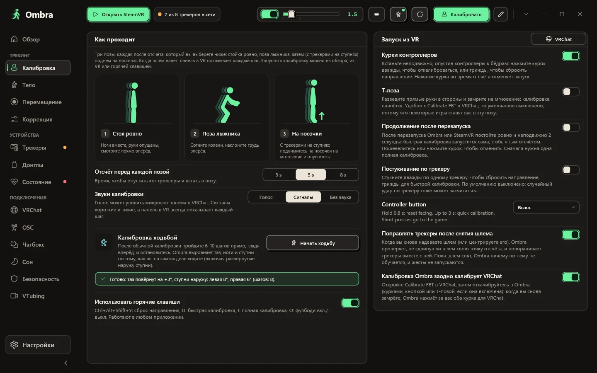
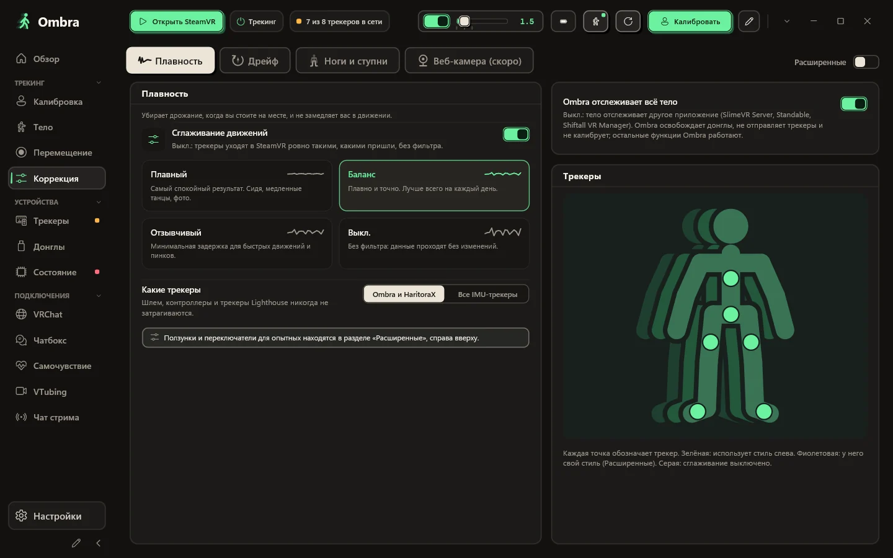
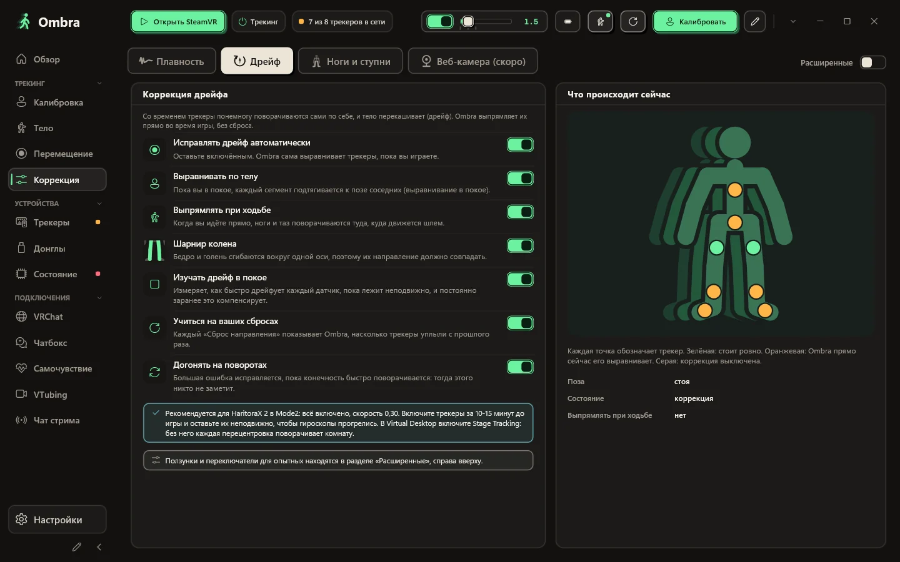
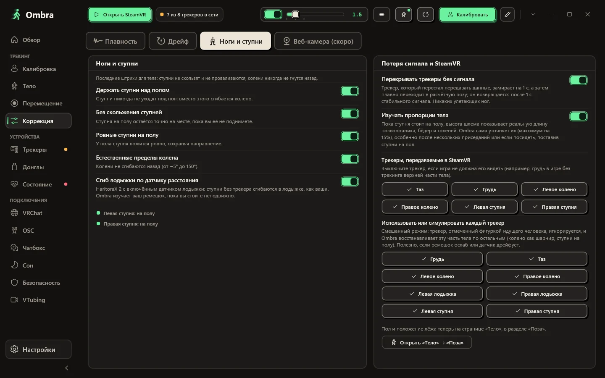
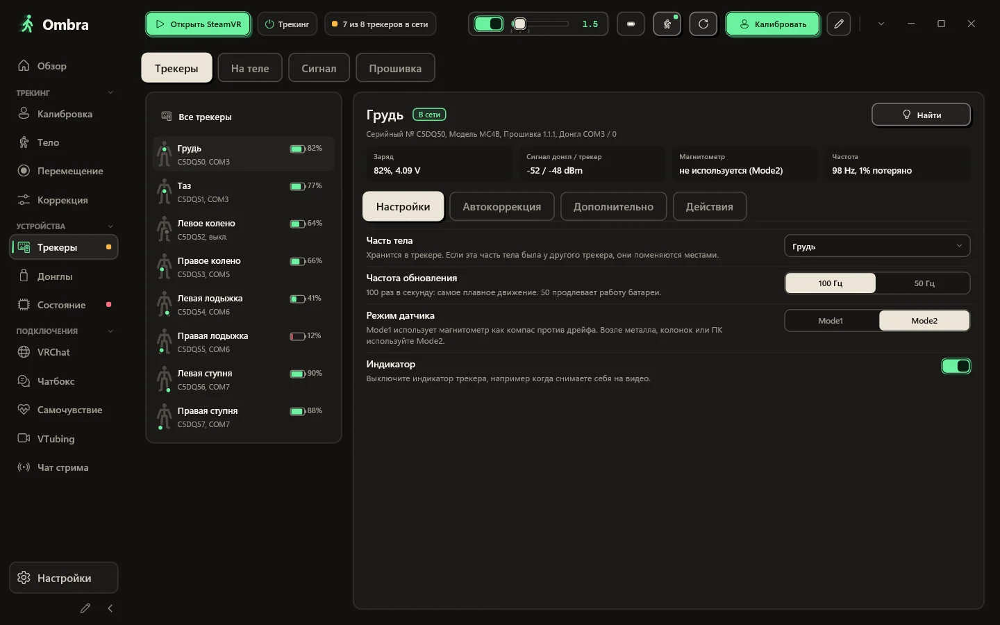
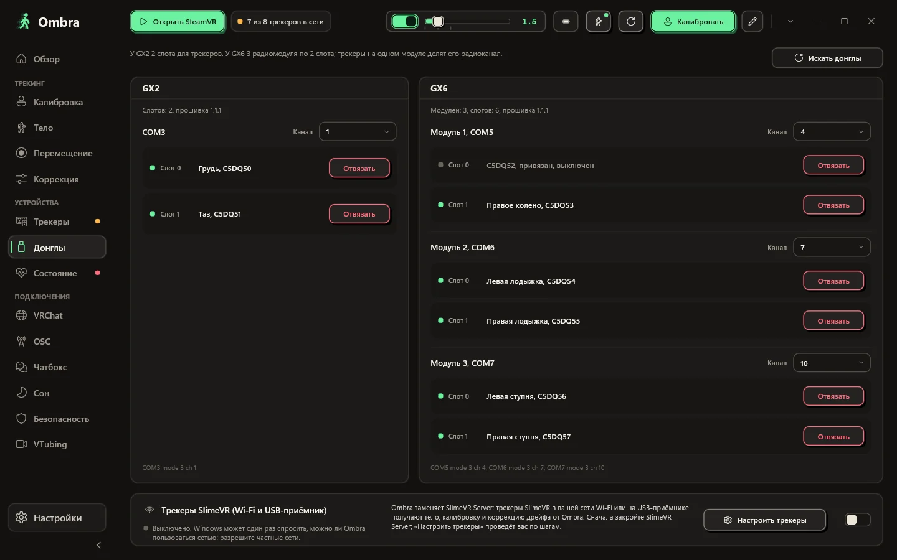
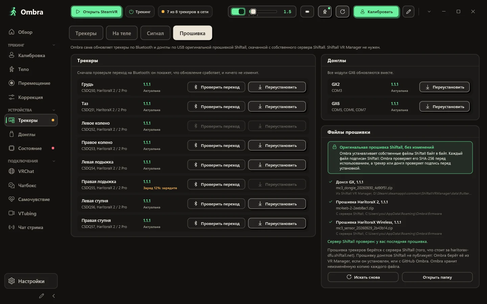
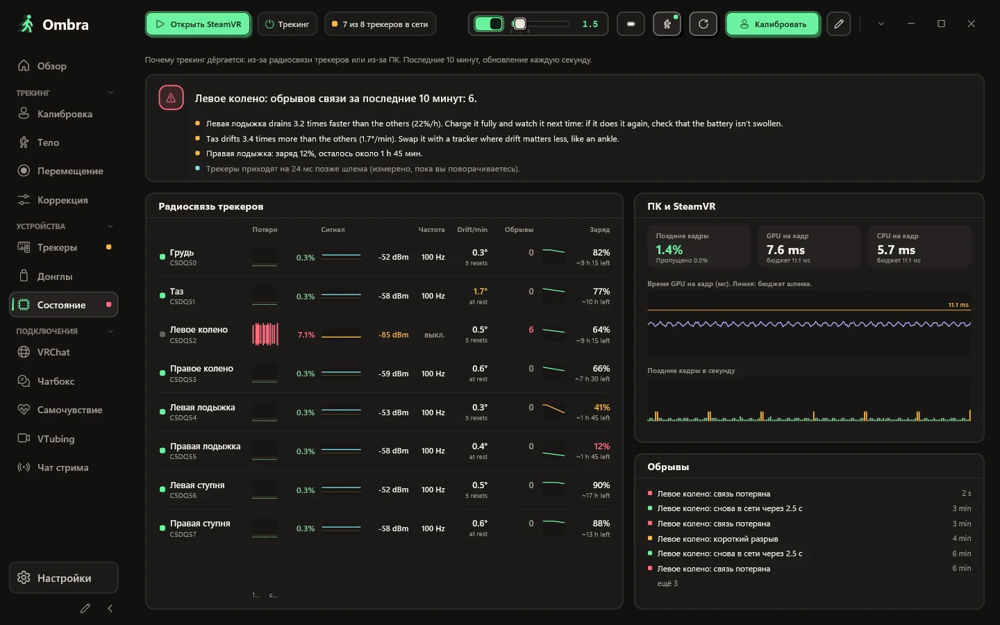
Тело, которое Ombra строит по вашим датчикам и шлему: спереди, сбоку или в свободном 3D-обзоре. Для каждого трекера видно, отслеживается ли он, симулируется или потерял сигнал.
Встаньте ровно, присядьте в позу лыжника, затем поднимитесь на носочки, если есть трекеры на ступнях. Если что-то не так, Ombra подскажет, какую часть тела проверить.
«Плавный», «Баланс», «Отзывчивый» или «Выкл.» — или любой уровень на ползунке. Задайте отдельному трекеру свой стиль, например ступни поспокойнее.
Коррекция дрейфа работает, пока вы играете, а таблица в реальном времени показывает, что она делает с каждой частью тела.
Тело остаётся правдоподобным: ступни не уходят под пол, опорная нога не скользит, колени никогда не гнутся назад.
Серийный номер, прошивка, слот донгла, напряжение батареи, сигнал с обеих сторон, состояние магнитометра и реальная частота обновления.
У GX2 два слота, у GX6 три радиомодуля по два слота в каждом. Ombra показывает каждый модуль, трекер в каждом слоте и его канал.
Обновление трекеров по Bluetooth и донглов по USB оригинальными файлами прошивки Shiftall, без изменений.
Когда трекинг дёргается, страница «Состояние» показывает, в чём причина: потерянные пакеты, сигнал и реальная частота обновления каждого трекера рядом с кадрами, которые пропустил SteamVR.
Выберите стиль, что показывать и в каком порядке. Ombra удерживает всё в одном пузыре и никогда его не заваливает.
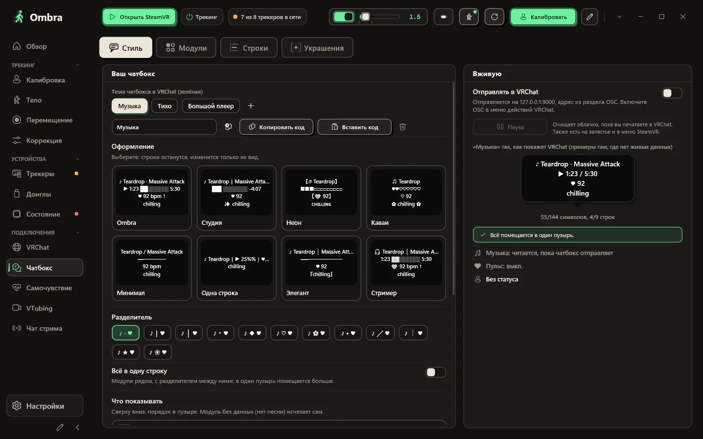
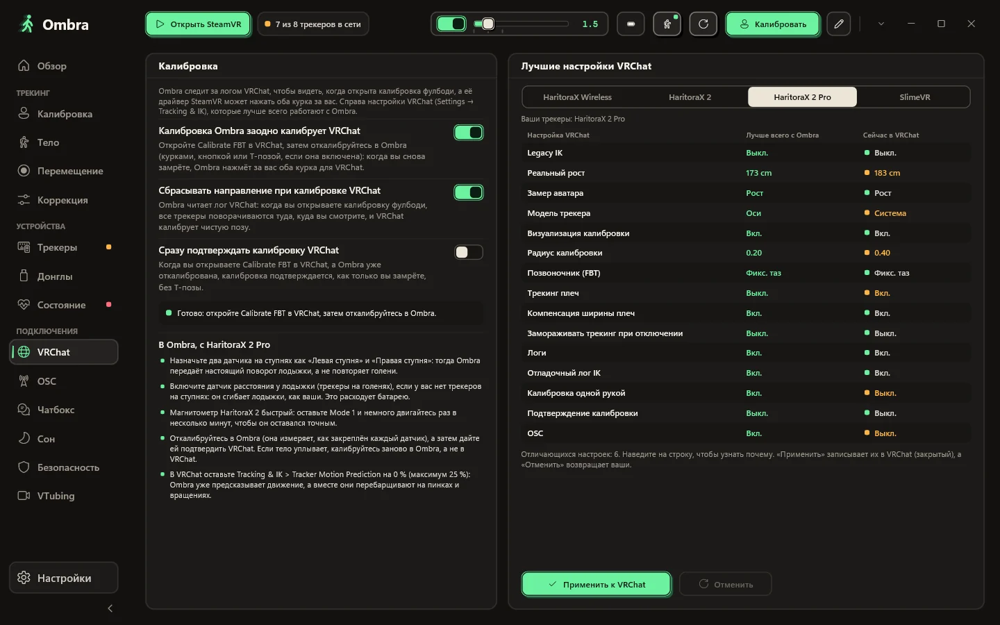
Начните со стиля: восемь настоящих пузырей VRChat с вашими собственными строками, от строгого до каваии. Включайте и выключайте модули, двигайте их вверх и вниз, выберите один из двенадцати разделителей, которые VRChat действительно рисует, или соберите всё в одну строку.
T7RK-1J85-6, без сервера посерединеКалибровка Ombra заодно калибрует VRChat, а настройки фулбоди, которые VRChat рекомендует для ваших трекеров, применяются в один клик — с возможностью отмены.
VRChat записывает, кто заходит и какой аватар загружает. Ombra читает этот лог на вашем ПК, поэтому после вылета вы видите вероятного крашера, а его аватар можно скрыть в один клик.
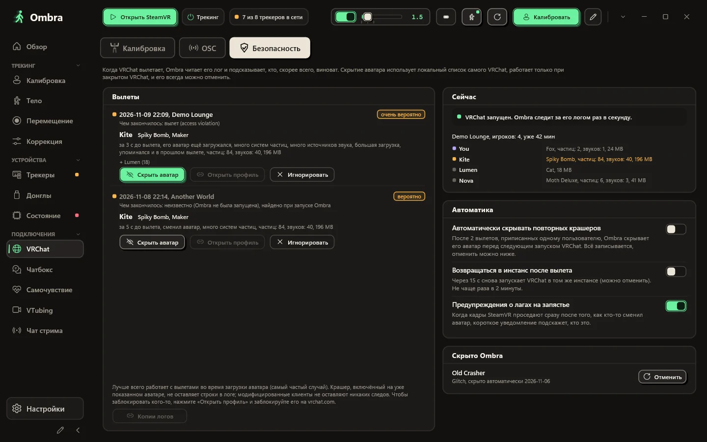
Всё, что нужно во время игры, — на запястье и в меню SteamVR.
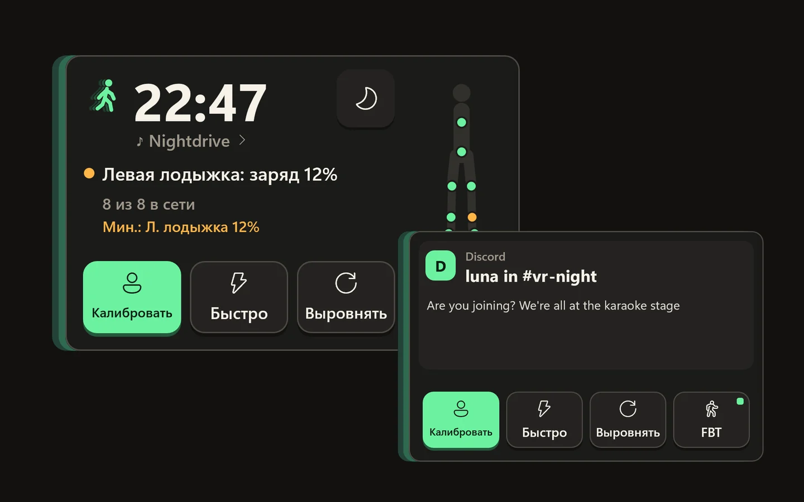
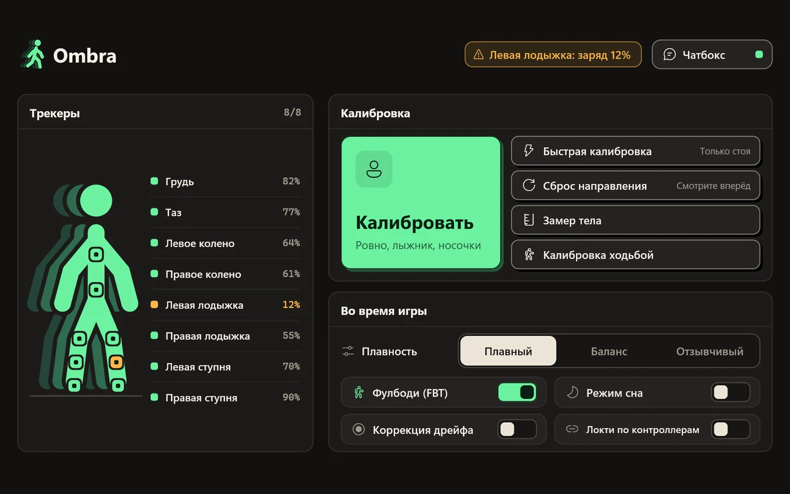
Посмотрите на запястье — и панель плавно появится: большие часы, сколько трекеров на связи и самая разряженная батарея, состояние калибровки, четыре подписанных переключателя (фулбоди, сон, экраны, зеркало) и ваша музыка. Туда же приходят уведомления с ПК. Отведите взгляд — и она исчезнет.
Все трекеры с зарядом, большие кнопки калибровки и сброса направления и переключатели, которые нужны прямо в игре.
Расставьте боковую панель по-своему и выберите свои цвета. Один клик возвращает всё как было.
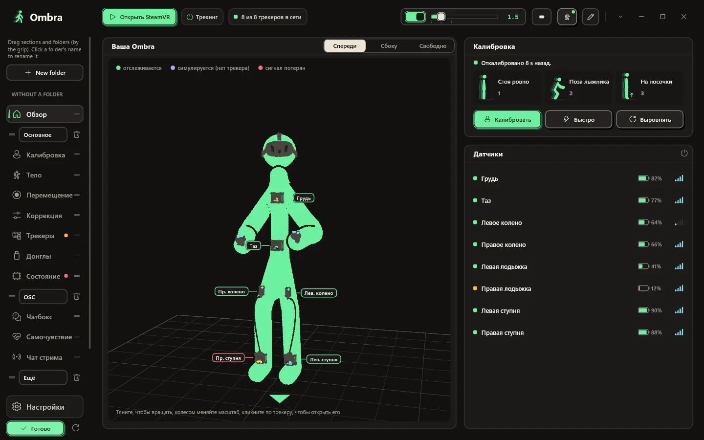
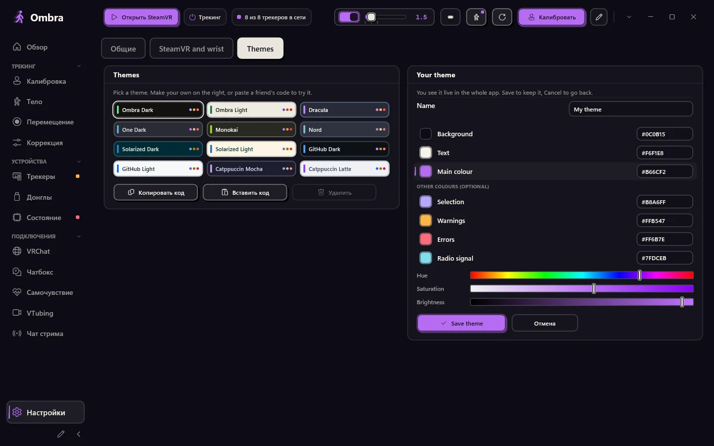
Нажмите на карандаш внизу панели: создавайте папки, называйте их и перетаскивайте разделы и целые папки куда угодно.
Настройки → Темы → Своя тема: выберите фон, цвет текста и основной цвет ползунками или hex-кодами. Остальное Ombra рассчитает сама. Тема сразу видна во всём приложении и на панелях в VR; сохраните её или отмените, чтобы вернуться.
Без браузера внутри, 12 цветовых тем и ваша собственная. SteamVR запускает Ombra, и она ждёт в трее с панелью для ваших трекеров.
Кнопки, которыми вы пользуетесь чаще всего, в нужном вам порядке.
Ombra сообщает о новой версии и никогда не обновляется, пока работает SteamVR.
По желанию: после перезапуска Ombra сама калибруется, как только вы замрёте на месте.
Вот всё, что Ombra делает с интернетом, и всё, чего она не делает.
Ombra часто обновляется. Здесь то, что принесла последняя версия, прямо из её заметок к выпуску, и что было до неё.
Ombra
У каждой версии есть заметки: что изменилось и как обновиться.
Windows 10 или 11 (64-бит) и SteamVR. HaritoraX 2, 2 Pro или Wireless с донглом GX либо трекеры, совместимые с SlimeVR.
Один файл — Ombra-Setup.exe. Кнопка ниже всегда скачивает последнюю версию.
Донглы может одновременно использовать только одно приложение.
Права администратора не нужны, драйвер SteamVR регистрируется сам. Если Windows предупреждает, смотрите вопросы ниже.
Включите трекеры, запустите SteamVR, наденьте их и нажмите Калибровать.
Последняя версия. Все релизы и изменения
Каждый выпуск проверяется Microsoft Defender и загружается на VirusTotal: смотреть отчёт.
Если чего-то не хватает, спросите на GitHub.
Нет. Ombra сама работает с донглами, привязывает трекеры и обновляет прошивку оригинальными файлами Shiftall. Пока Ombra запущена, держите другие приложения для трекеров закрытыми.
HaritoraX 2, 2 Pro и Wireless через донглы GX2 или GX6, а также SlimeVR-совместимые трекеры по Wi-Fi или через USB-приёмник, например Butterfly и Smol Slime. Трекеры с базовыми станциями, такие как Vive-трекеры, можно выровнять по Quest, а Ombra может сглаживать и другие IMU-трекеры, уже подключённые к SteamVR. HaritoraX 1 (проводной) не поддерживается.
Да. С ПК через SteamVR, по кабелю или без проводов. Если VRChat запущен прямо на Quest, Ombra передаёт ваше тело с ПК по OSC, без SteamVR.
У установщика пока нет цифровой подписи, поэтому SmartScreen его не узнаёт. Нажмите Подробнее, затем Выполнить в любом случае. Программа ставится в вашу папку пользователя и не требует прав администратора.
Установщик ставит собственный драйвер Ombra для SteamVR. Ваши трекеры появляются в SteamVR с уже назначенными ролями (таз, грудь, колени, ступни, локти), а SteamVR сам запускает Ombra.
Нет. Устройства Lighthouse, шлемы и контроллеры никогда не изменяются. Драйвер только создаёт виртуальные трекеры Ombra и — только если вы это включите — сглаживает другие IMU-трекеры.
Нет. Многие используют Ombra только ради чатбокса, инструментов для VRChat и тела, построенного по шлему. Выберите Без трекеров при установке, и Ombra никогда не попросит донгл.
Да. Запустите Ombra.exe --demo, и появятся восемь демо-трекеров на GX2 и GX6. Демо-режим никогда не трогает COM-порты, Bluetooth, SteamVR и ваши настройки.
Приложение и этот сайт доступны на английском, итальянском, немецком, французском, испанском, бразильском португальском, японском, корейском, упрощённом китайском и русском. Ombra берёт язык Windows, а сменить его можно в настройках.
Нет. Ombra — независимый проект, скачивать и пользоваться можно бесплатно. Исходный код не публикуется; предложить функции, расширения и переводы можно на GitHub.
Да. Ombra делает один разработчик с помощью ИИ-инструментов, в основном Claude от Anthropic: для исследований, кода, тестов и переводов. Что делает Ombra, решает разработчик, и каждую версию он утверждает сам. Генераторы изображений на ИИ не использовались: скриншоты — настоящие снимки приложения. Внутри Ombra ИИ использует только необязательный голосовой ввод в чатбокс: модель Whisper работает на вашем ПК, и ваш голос никуда не отправляется.
Ombra-Setup.exe скачивается
Когда Windows сообщит, что защитила ваш компьютер, нажмите Подробнее, затем Выполнить в любом случае. У установщика пока нет цифровой подписи, поэтому SmartScreen его не знает.
Если Ombra вам пригодилась, звезда на GitHub поможет другим её найти.
Поставить звезду на GitHub